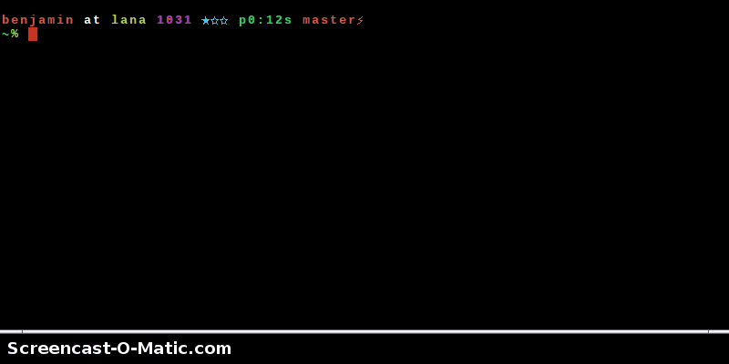

1. Quick start¶
These are quick instructions for the impatient, just wanting to check out DisPass. For full user documentation browse to the next section.
1.1. Download¶
Download DisPass from the Python Package Index with pip. As root, do the following
# pip install dispass
If you don’t have pip installed you can try easy_install:
# easy_install dispass
If you are using Archlinux, it is advised to install dispass with pacman.
1.2. Using DisPass for the first time¶
For this example we will set a passphrase to use for a google account.
Create and save a label google to the labelfile:
$ dispass add google
Generate the passphrase for the first time. Since you will need to
register the password with google we pass the -v flag to avoid
typing errors while creating the passphrase for the first time:
$ dispass generate -v google
1.3. Mini screencast¶
Checkout the following mini screencast. In this demo the label is added interactively.
